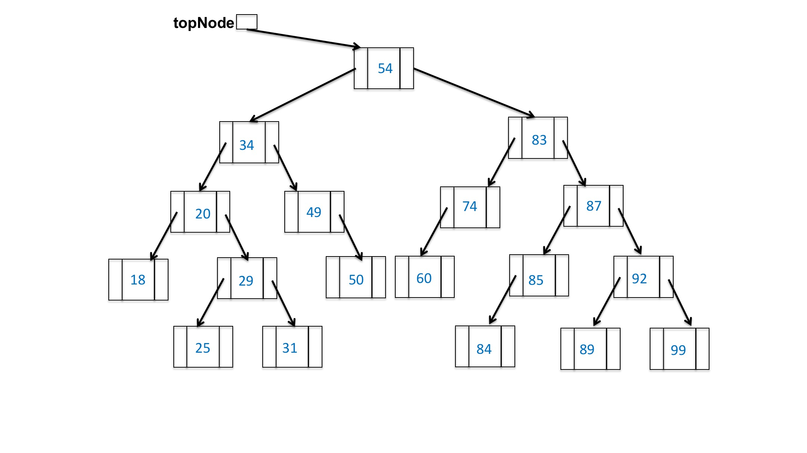

Given:
private BinaryNode remove(T data, BinaryNode node) {
// This local variable will contain the new root of the subtree,
// if the root needs to change.
BinaryNode result = node;
// If there's no more subtree to examine
if (node == null) {
throw new ItemNotFoundException(data.toString());
}
// if value should be to the left of the root
if (data.compareTo(node.getData()) < 0) {
node.setLeft(remove(data, node.getLeft()));
}
// if value should be to the right of the root
else if (data.compareTo(node.getData()) > 0) {
node.setRight(remove(data, node.getRight()));
}
// If value is on the current node
else {
// If there are two children
if (node.getLeft() != null && node.getRight() != null) {
T successorData = elementAt(findMin(node.getRight()));
result = remove(successorData, result);
result.setData(successorData);
}
// If there is only one child on the left
else if (node.getLeft() != null) {
result = node.getLeft();
}
// If a leaf or only one child on the right
else {
result = node.getRight();
}
}
return result;
}
and

remove(74, topNode)
Choices are:
There are no hints for this question.